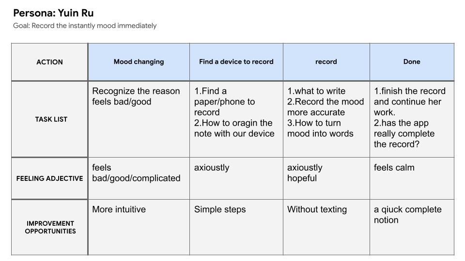

Role
UI/UX Desinger
Tools
Miro for FlowChart
Miro for Wireframe
Illusturator
PhotoShop
Adobe Xd
Duration
12/2020
Concept
It is a mood recording app for everyone. Users can easily record their mood status immediately at any time.
The app can help users analyze their own mood status and more understand physical information to improve uesrs’ mental health.
Ideate
At first, this project was only a graphic design practice of mine. Then, I found out mood issues has been bothering every human, and it is easy to have different mental illnesses for everyone nowadays. However, mental illnesses are not as simple as other diseases which can be discovered by physical pains; also, it's hard to explain to others, even doctors.
I'm not a doctor, but I know it is uncomfortable while we cannot find out the reason of depression. So I decided to build an app for users to record their mental status.
Persona
User Stories
As a normal office worker, I want a good application that can record my mood status to help me discover the reasons for my upset.
As a popular student at school, I still want to analyze the problem by recording every moment when my feeling changes, and recognize who or what makes me feel uncomfortable.
User Journey Map
FlowChart
WireFrame

Design
Style
To create a unique portfolio website,"Let user more focus" my main idea of this projects. Oblique rectangle is the main idea of my web, change a bit of angle on the surface can make a big different on the visual presentation. The color that I choose, dark gray and dark red with a little pink,but only symbols the steady of my website, and also innovatory.
Color
Interaction
Recording users’ mood immediately is the most important part of this app. I placed the mood choosing button ('+' button) in the center of the tab bar at the bottom, so users can hold the button and swipe to 'Good mood' or "Bad mood" easily. At the end of the day, Remooder will organize all your choices then analyze it.
SignIn-Page Prototype

FaceID is applied to the app to make it easier for users to sign-in, it is also a good way to increase the speed to sign-in the app when they change their devices. Moreover, three different languages is offered for users to choose.
Home-Page Prototype

The important information is set at the Home page, so users can browse it simply. Remooder will analyze the options users chose and draw them into a circular graph. Additionally, Remooder displays all the items users picked, and the users can add annotations on the good or bad items.
Remooder is not only a recording app but a diary that users can write down all the things happened. The diary and the analysis will be saved in the database, and users can review than anytime.
LI-TANG CHEN
A UI/UX DEsigner
from Taiwan